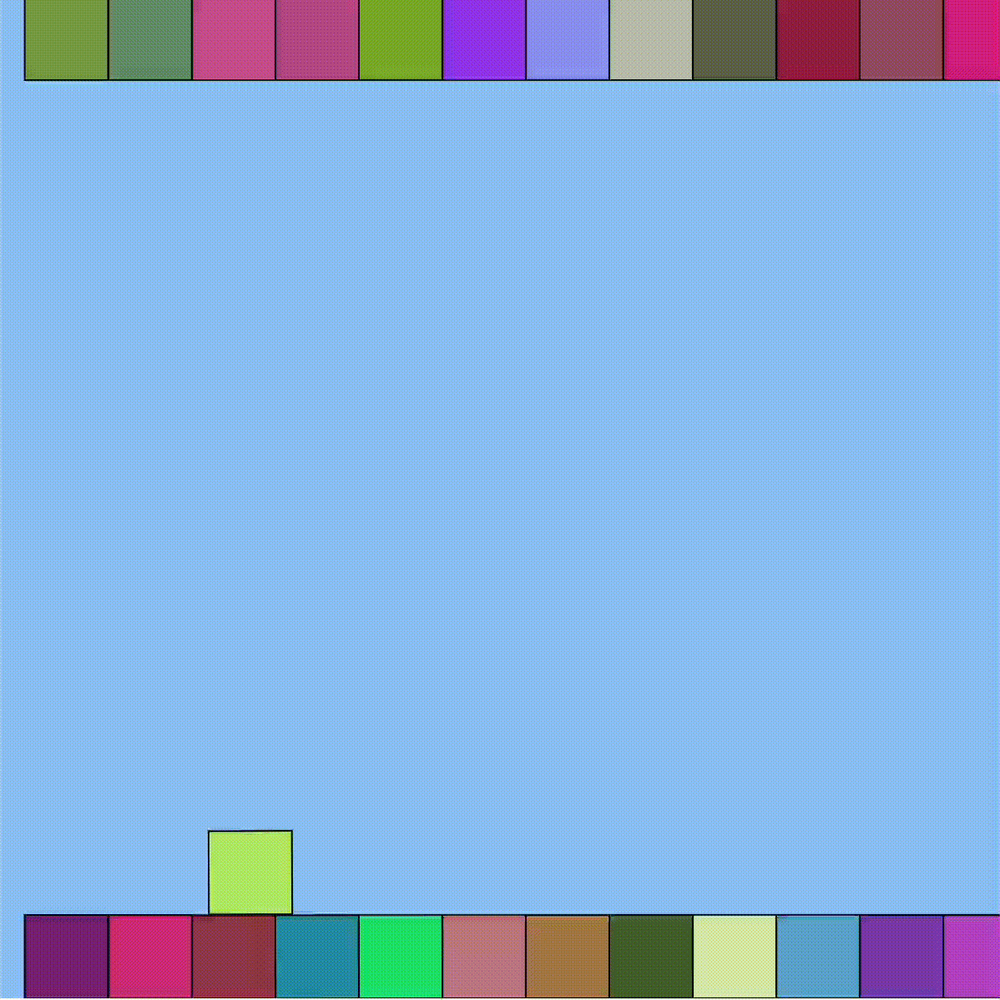

MP-3 Write Up: Dev Toolchain
Overview
For this assignment, we were tasked with practicing developing an app using modern development tools. For this assignment, I decided to work on a game and publishing it through a dev toolchain.
Process & Issues
Setting up everything was really easy because I just followed the dev tutorial. I decided that I wanted to create a side-scrolling game and followed this tutorial. My first issue came with getting the side to scroll. The ground boxes I created would all just slowly disappear without scrolling. To solve this, I discovered from Hannah that the issue was a version issue, and that I had to just get rid of the drawSprites() at the end of the screen.
However, this wasn't the end of the issue, because I realized that even though it would scroll, nothing would appear at the end of it. When I added in console.logs before and after each ground sprite's remove() and add() methods, I saw that they were indeed shifting. Therefore, I realized that the sprites were shifting, but simply not showing up. By asking Hannah, I was able to realize that this problem was a result of a weird bug where the camera position was not updating properly. Instead of using camera.position.x, I changed it to camera.x.

Next up, I worked on getting the obstacles set up. My main issue here was getting the obstacles and the sprite to collide and then end the game. I was confused why this was happening, but after looking at the discord, I saw that YanFu had a similar problem. His problem helped me realize that it was because I had to cycle through the different obstacles themselves, not just the group to check to see if there was an overlap. I'm not sure if this was an issue that should have happened, but I'm glad that Yanfu's work was able to show me that there was a way to solve it.
I also had a problem figuring out how to get the mousePressed function to work. I made a separate function, but it wasn't getting any response. I ended up using the mouseIsPressed as an if statement, but placing it at the top of the draw as a way to reset the game. Finally, this helped it all to work out.

Overall, I learned that working with different versions of libraries can be extremely difficult, because looking up solutions online can vary based on the different versions. The tutorial showed me steps that were for a different version, so it became sort of hard to figure out which steps were still accurate for the version I had now, and which I needed to update. If I hadn't gotten help from Hannah, I wouldn't have figured those out.